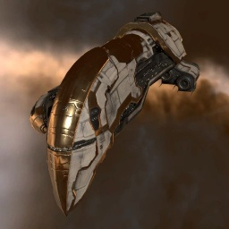

Omen

Тип корабля: Крейсер
Государство/Организация: Amarr
Примерная стоимость: 12.100.000 ISK
Описание
Сильные стороны проекта «Омен» — толстая броня и мощные лазеры, что совершенно типично для амаррских кораблей. Благодаря усовершенствованным системам отвода тепла «Омен» превосходит по скорострельности лазерных орудий любой другой корабль, не оснащённый этой технологией.
Характеристики
Корпус
Запас прочности корпуса: 1.500 ед.
Вместимость грузового отсека: 400 м^3
Объем отсека для дронов: 40 м^3
Пропускная способность канала телеуправления: 40 Мбит/с
Масса: 13.000.000 кг
Занимает объем: 118.000,0 м^3 (10.000,0 м^3 в разобранном виде)
Влияние инертности конструкции: 0,43x
Сопротивление корпуса ЭМ-урону: 33 %
Сопротивление корпуса термальному урону: 33 %
Сопротивление корпуса кинетическому урону: 33 %
Сопротивление корпуса фугасному урону: 33 %
Броня
Запас прочности брони: 1.700 ед.
Сопротивление брони ЭМ-урону: 50 %
Сопротивление брони термальному урону: 35 %
Сопротивление брони кинетическому урону: 25 %
Сопротивление брони фугасному урону: 20 %
Щит
Запас прочности щита: 1.200 ед.
Влияние на время регенерации щитов: 20 минут и 50 секунд
Сопротивление щита ЭМ-урону: 0 %
Сопротивление щита термальному урону: 20 %
Сопротивление щита кинетическому урону: 40 %
Сопротивление щита фугасному урону: 50 %
Сопротивление средствам РЭП
Сопротивление накопителя нейтрализирующему воздействию: 0 %
Сопротивление воздействию генератору стазис-поля: 0 %
Сопротивление воздействию помех на наводку вооружения: 0 %
Накопитель энергии
Емкость накопителя: 1.600,0 ГДж
Время востановления заряда: 9 минут и 25 секунд
Целеуказания
Максимальная дальность захвата цели: 55 км
Максимальное количество захваченных целей: 6
Радиус сигнатуры: 115 м
Разрешающая способность систем захвата цели: 300 мм
Эффективность радарной системы: 15 ед.
Эффективность магнитнометрической системы: -
Эффективность гравиметрической системы: -
Эффективность ладарной системы: -
Двигательная установка
Максимальная скорость: 260 м/с
Скорость в варп-режиме: 4,0 а.е./с.
Служба оснащения
Мощность ЦПУ: 330,0 Тф
Мощность реактора: 1.000 МВт
Калибровка: 400 ед.
Точки монтажа орудийных установок: 5
Точки монтажа пусковых установок: -
Разъемы большой мощности: 5
Разъемы средней мощности: 3
Разъемы малой мощности: 6
Разъемы под установку тюнинг-модулей: 3